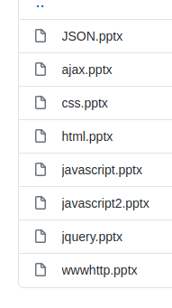

Web Technologies
- HTML
- CSS
- and script languages, such as
- PHP
- JavaScript
| |
||
| Web Technologies 1. | Web applications in Java | Data Manipulation with XML |
Web Technologies |
||
This semester's main focus is to learn and be confident with a wide variety of languages that are often used in state of art websites, such as
|
 | |